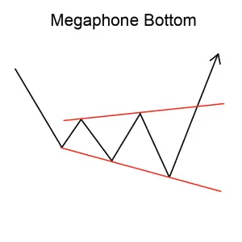
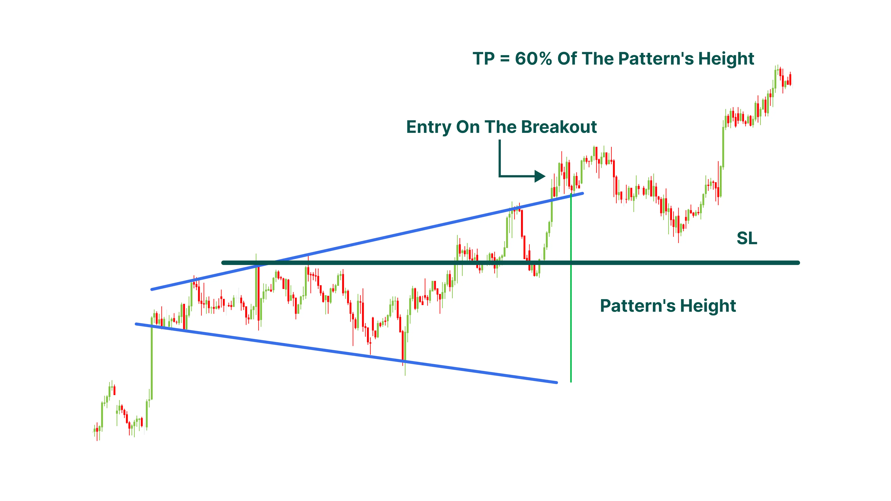

Implication
A Megaphone Bottom also known as a Broadening Bottom is considered a bullish signal, indicating that the current downtrend may reverse to form a new uptrend.
Description
This rare formation can be recognized by the successively higher highs and lower lows, which form after a downward move. Usually, two higher highs between three lower lows form the pattern, which is completed when prices break above the second higher high and do not fall below it.
The pattern is completed when, usually on the third upswing within the pattern, prices break above the prior high but fail to fall below this level again.

Figure 9: Megaphone Bottom
